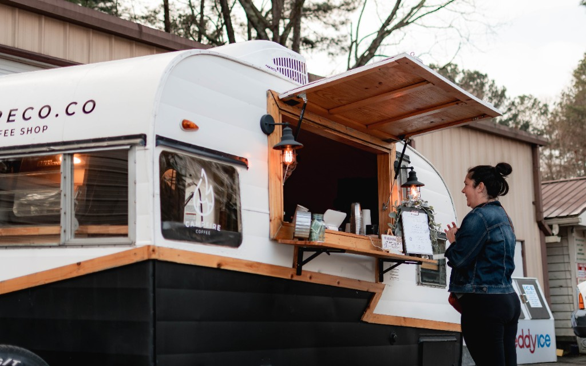

Bachelor of Science in Organizational Leadership at Toccoa Falls
College (May 2023)
What is Organizational Leadership?
Learning how to start and run a business
Learning how to be the kind of leader people want to work with
Pond & Company - Human Resources Intern
Siemens Healthineers - Sales & Marketing Intern

In 2021, Dani wrote the business plan, bought the equipment and
launched Campfire Coffee, a mobile coffee business that had been a
dream of one of her mentors. She ran it until 2024 when they
opened their brick & mortart location which her friend Darien now
manages.
Feb 2024 - June 2025: SDR
June 2025 - Augst 2026: Account Specialist
August 2026 - Present: Associate Solution Engineer (YAY!)